* 다음 포스팅의 모든 내용은 BaaaaaaaaarkingDog 님의 [실전 알고리즘] 0x0B강 - 재귀 강의를 공부한 뒤 개인적인 공부 용도로 간략하게 요약하여 정리한 글 입니다. 자세한 내용은 아래 바킹독님의 블로그에서 확인해 주세요.
BaaaaaaaarkingDog | [실전 알고리즘] 0x0C강 - 백트래킹 (encrypted.gg)
[실전 알고리즘] 0x0C강 - 백트래킹
이번에는 백트래킹을 배워보도록 하겠습니다. 백트래킹도 재귀와 더불어 많은 사람들이 고통을 호소하는 알고리즘 중 하나이지만 의외로 그 재귀적인 구조에 매료되어서 참재미를 알아버리는
blog.encrypted.gg
#1 백트래킹
#1.1 BOJ15649 N과M(1)
#1.2 BOJ9663 N-Queen [미완성]
#1 백트래킹
백트래킹 알고리즘이란 해를 찾는 도중 해가 될 가능성이 없다면 이전 상태로 되돌아가 다시 해를 찾아가는 기법이다.
깊이 우선 탐색 알고리즘인 DFS와 많이 유사한데 DFS는 유망하지 않은 경로를 사전에 차단하는 등의 행동을 수행하지 못하지만 백트래킹 알고리즘은 유망하지 않은 경로를 조기차단하여 효율성을 높일 수 있다.
이처럼 유망하지 않은 경로를 조기차단 하는 것을 "가지치기(pruning)한다" 라고 표현한다.
#1.1 BOJ15649 N과 M(1)
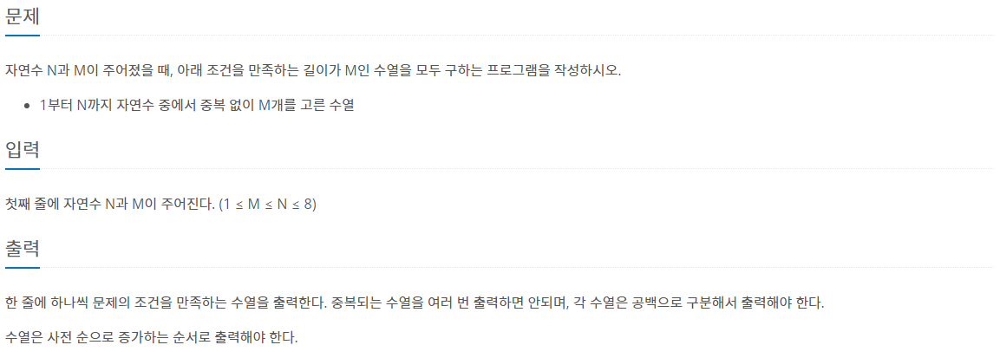 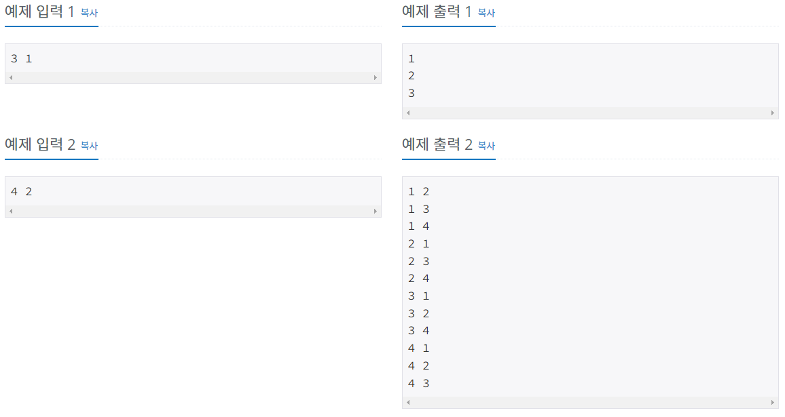
1 부터 n(4)까지 자연수 중에서 중복 없이 M(2)개를 고른 수열을 백트래킹을 이용해 구해 보도록 하겠다.
처음에는 빈 배열에서 시작한다.
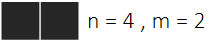
다음으로 첫 번째 원소를 1로 설정한다.
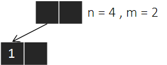
숫자 1이 사용 되었으니 중복 없이 수열을 만들기 위해서는 2번째 숫자로 2, 3, 4가 들어가야 한다.
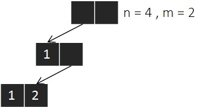
배열의 끝에 도달하였으니 이전 상태로 역추적(Backtracking)하여 다시 탐색을 시작한다.
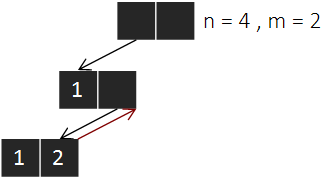
같은 방식으로 첫 번째 원소가 1인 배열의 모든 조합을 탐색한다.
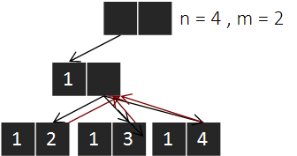
첫 번째 원소가 1인 배열의 모든 조합을 탐색했다면 다시 초기 상태로 역추적한다.
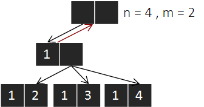
나머지 케이스들도 같은 방식으로 탐색을 수행하면 된다.
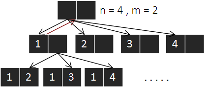
#include <bits/stdc++.h>
using namespace std;
int n, m;
int arr[10];
bool isVisited[10]; // 숫자 i를 사용했는지 확인하는 배열
void recur(int k){
if(k == m){
for(int i = 0; i < m; i++)
cout << arr[i] << " ";
cout << '\n';
return;
}
for(int i = 1; i <= n; i++){
// 숫자 i를 사용하지 않았다면
if(!isVisited[i]){
arr[k] = i; // 배열의 k번째 원소를 i로 설정한다.
isVisited[i] = true; // 숫자 i를 사용했다고 표시한다.
recur(k+1); // 배열의 k + 1 번째 원소를 탐색하러 들어간다.
isVisited[i] = false; // 탐색을 모두 끝마쳤다면 숫자 i 사용 여부를 해제한다.
}
}
}
int main(void) {
ios::sync_with_stdio(0);
cin.tie(0);
cin >> n >> m;
recur(0);
return 0;
}#1.2 BOJ 9663 N-Queen
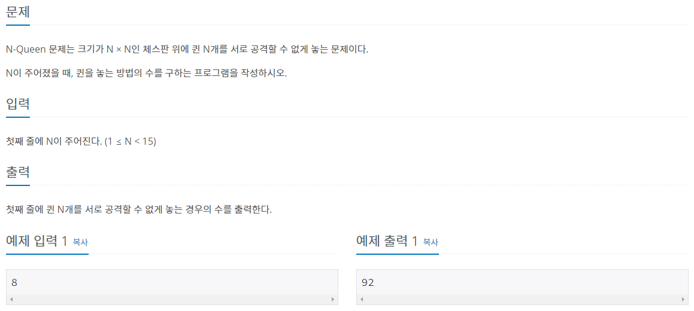
BOJ 9663 N-Queen 문제는 n * n 으로 이루어진 체스판에서 퀸 n개를 서로 공격할 수 없게 설정하는 무제이다.
퀸의 공격방향은 다음과 같이 8방향으로 퍼져 나간다.
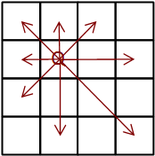
따라서 퀸의 공격방향에 또 다른 퀸이 존재한다면 불가능한 배치가 되고, 공격 방향을 모두 피해 남은 칸에 퀸이 존재한다면 가능한 배치가 된다.
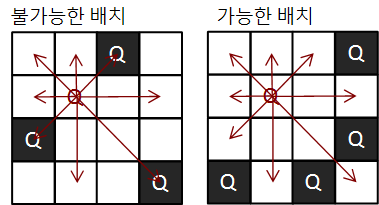